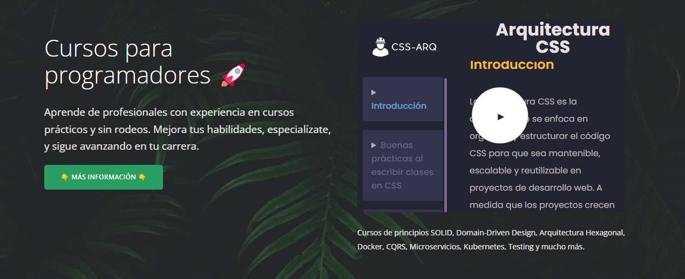

Los organismos son los componentes más específicos y menos reutilizables en nuestra aplicación. Estos elementos son independientes y se pueden usar en diferentes páginas, pero es raro que se repitan en la misma página. Debido a su naturaleza única, es crucial evitar la creación de abstracciones prematuras en esta capa.
Una abstracción prematura sucede cuando tratamos de hacer un código más general o reutilizable antes de entender bien cómo y dónde se va a usar. En el caso de los organismos, que son componentes únicos y específicos, intentar hacer esto puede complicar el código y hacer que sea más difícil de mantener. Es mejor tener un poco de código repetido que intentar hacer una generalización que no encaja bien con lo que realmente necesitamos. Una abstracción incorrecta es cuando hacemos una generalización que no se ajusta bien a los organismos y termina haciendo el código más difícil de entender y de modificar.
Veamos más contexto para entender más la abstracción.
En este contexto, abstraer significa simplificar o generalizar el código para que pueda ser utilizado en diferentes situaciones, en lugar de estar diseñado solo para un caso específico. Cuando abstraes, estás creando una "versión simplificada" de algo, de manera que el mismo código se pueda aplicar en distintos contextos.
Por ejemplo, si tienes varias tarjetas en una página que necesitan estilos similares, en lugar de escribir el mismo estilo para cada tarjeta por separado, podrías abstraer esos estilos en una sola clase que se aplique a todas las tarjetas. Esto hace que el código sea más reutilizable y más fácil de mantener.
Sin embargo, en el contexto de los organismos, abstraer demasiado pronto o de manera incorrecta puede ser problemático, porque estos componentes suelen ser únicos y específicos, por lo que no siempre se benefician de la generalización.
Organismo Hero
El "hero" de una página web es una sección destacada que generalmente aparece en la parte superior de la página, justo debajo de la barra de navegación. Suele ser el primer elemento visual que los usuarios ven cuando cargan la página y está diseñado para captar su atención de inmediato. Esta sección puede incluir una imagen o video llamativo, un título prominente, subtítulos, y una llamada a la acción (CTA).
Como habiamos mencinoado en el capítulo anterior es preferible que los tamaños y márgenes se definan a nivel de organismo.
Veamos el organismo Hero que tenemos.

Dentro del hero podemos ver los siguiente.
Molécula m-video-thumbnail
átomo button
Átomo lead de texto
El organismo hero tiene su propia estructura, por lo que le delegamos la responsabilidad de organizar todo lo que contiene, ya que esta estructura es específica del hero. Si tuviéramos un sistema de grid que se utilizara de manera consistente en diferentes contextos, podríamos considerarlo como un objeto, ya que sería altamente reutilizable. Sin embargo, en nuestro caso, es el propio hero quien define y proporciona la estructura.
<section class="a-cover-background a-cover-background--plant">
<!--Declaramos el organismo g-hero-->
<div class="g-hero o-container">
<!--Todo elemento que no sea una molécula o átomo viene a ser parte del
organismo en este caso g-hero__info-->
<div class="g-hero__info">
<h1>Cursos para programadores 🚀<br /></h1>
<p class="a-lead">
Aprende de profesionales con experiencia en cursos prácticos y sin
rodeos. Mejora tus habilidades, especialízate, y sigue avanzando
en tu carrera.
</p>
<a class="a-btn a-btn--primary" href="#subscription" target="_self">
<span class="a-btn__text">👇 Más información 👇</span>
</a>
</div>
<div class="g-hero__media">
<div class="m-video-thumbnail">
<img
alt="Vídeo introducción cursos CodelyTV Pro"
src="img/bg/arq.png"
class="m-video-thumbnail__img"/>
<button
aria-label="Reproducir Vídeo introducción cursos CodelyTV Pro"
class="m-video-thumbnail__play m-video-thumbnail__play--large">
</button>
</div>
<p>
Cursos de principios SOLID, Domain-Driven Design, Arquitectura
Hexagonal, Docker, CQRS, Microservicios, Kubernetes, Testing y
mucho más.
</p>
</div>
</div>
</section>
Veamos el css, como es que logramos que el hero sea el que da la estructura de sus hijos.
/*File hero.css*/
/*a g-hero es un contenedor flexible y sus hijos serán wrap, cuando no quepan saltarán
de línea*/
.g-hero {
display: flex;
flex-wrap: wrap;
gap: 1rem;
padding-top: var(--spacing-l);
padding-bottom: var(--spacing-l);
}
/*Los hijos directos que son g-hero__info, g-hero__media tienen un flex-basis:auto
lo que significa que su ancho, ya que el main-axis está en row, va a ser auto
es decir tendrá un ancho intrínseco que lo define el contenido, y tambien tenemos
un flex-grow:1; lo que hará que los elementos crezcan una proporción del
espacio disponible*/
.g-hero > * {
flex-basis: auto;
flex-grow: 1;
}
/*El g-hero__info tendrá un ancho mínimo del 50% de su contenedor, y al
asignarle un flex-basis:0; significa que su ancho no lo determinará
su contendio, si no la proporción de flex-grow que le digamos que en
este caso es 999, al ponerle una proporción de crecimiento demasiado
alto significa que crecerá mas que cualquier otro elemento dentro.*/
.g-hero > :first-child {
min-width: 50%;
flex-basis: 0;
flex-grow: 999;
}
.g-hero__info {
padding-right: 2rem;
font-size: var(--fs-lead);
}
/*A g-hero__media le específicamos un ancho máximo de 33rem, y siempre
estará centrado, cuando este elemento no quepa y salte de línea
siempre estará centrado.*/
.g-hero__media {
max-width: 33rem;
margin: 0 auto;
}
.g-hero p {
opacity: 0.9;
}
.g-hero .btn {
margin-top: 1rem;
}
De esta manera es como logramos que el organismo g-hero sea el que se encargue de dar la estructura a sus hijos.
Justificación de selectores anidados
En este punto de nuestra arquitectura ya está justificado utilizar selectores anidados ya que es el sitio para hacerlo.
Por ejemplo en nuestro organismo Hero hemos optado por aplicar selectores anidados para darle más margin al botón y agregarle más opacidad al párrafo.
Esto ya depende como lo comentabamos en las moléculas si anidamos o creamos clases por separado para aplicar ciertos estilos.
Entonces en este punto está justificado crear selectores anidados, ya que estamos creando cosas bastantes concretas.
¿Porque no reutilizar un mismo organismo para más cosas?
Como mencionabamos al inicio de este capítulo hablabamos sobre abstracciones prematuras, generalizar el código para que pueda ser utilizado en diferentes situaciones, en lugar de estar diseñado solo para un caso específico.
Es mejor tener un poco de código repetido que intentar hacer una generalización que no encaja bien con lo que realmente necesitamos. Una abstracción incorrecta es cuando hacemos una generalización que no se ajusta bien a los organismos y termina haciendo el código más difícil de entender y de modificar.
Veamos el siguiente ejemplo donde tenemos un organismo que llamamos g-subscribe que comparte una similutud con el organmismo g-hero
Como podemos observar la estructura de ambos organismos es similar teniendo sus moléculas posicionadas hacia los lados, con algunas diferencias como la separación entre ellas.
Aquí es donde podriamos pensar en hacer un componente reutilizable de esto, pero como hemos dicho hay similitudes en ambos organismos como que una molécula es más estrecha que otra, y la separación entre ambas es diferente entre un organismo u otro.
Podemos hablar con diseño y les decimos, estandarizamos esto un poco, pero igual nos dicen: no, como los 2 organismos van seguido, usar la misma estructura es repetitivo.
Esta bien comentarlo pero si hay un motivo por el que sean aunque sea un poco distinto, hay que respetar cada organismo. Entonces en lugar de intentar de hacer estas abstracciones, que nos va a costar mantener. Es mejor llegar a duplicar un poco el código
Como podemos ver nuestro código esta un poco duplicado pero será mas fácil de mantener.
Antes de hacer una abstracción prematura y parametrizar cosas que se pueden hacer por separado, es mejor copiar y pegar los estilos y editamos lo que haga falta por las peculiaridades de cada organismo.
Recordemos que ya estamos hablando de organismos y estos siempre serán los menos reutilizables, por eso el tratar de hacer una abstracción de un organismo para reutilizarlo en otro sitio, no nos viene bien ya que un organismo es más concreto que no se van a repetir. Es mejor duplicar código.
Pensar a futuro, ¿Anidar clases o crear una clase específica?
Cuando diseñamos organismos, surge una pregunta importante: ¿debemos anidar selectores o crear clases específicas para cada caso?
Como ya habiamos mencionado aquí ya podemos anidar clases, pero veremos más a fondo como llegar a una decisión.
Por ejemplo, consideremos un organismo llamado courses, que muestra una cuadrícula de tarjetas (cards).
/*File courses.css*/
.g-courses {
border-bottom: 1px solid var(--border-inverted-color);
background: var(--background-light-color);
}
.g-courses__filters {
margin-bottom: 3rem;
}
.g-courses__grid {
column-width: 18rem;
gap: 1.87rem;
}
/*En lugar de haber creado la clase __item pudimos haber anidado
la clase de la molécula de card a continuación el porque de esto.*/
.g-courses__item {
margin-bottom: 1.87rem;
break-inside: avoid;
}
¿Por qué no anidamos?
Aunque hoy estamos usando tarjetas, en el futuro podríamos reemplazarlas por otro componente. Dado que el estilo que queremos aplicar no está directamente relacionado con las tarjetas (cards), es mejor crear una nueva clase específica, como courses__item. Esta clase se asegura de que el estilo esté correctamente aplicado, incluso si cambiamos el contenido de las tarjetas en el futuro, es decir que ya no sean cards si no que sea cualquier otro componente el haber anidado nos hubiese dado problemas, es por eso que creamos mejor la clase courses__item.
En pocas palabras hemos logrado una responsabilidad totalmente separada de card.
Por otro lado, si el objetivo es modificar una propiedad específica de las tarjetas dentro de courses, como eliminar el border-radius, entonces usar un selector como .courses .card sería la opción adecuada. Este enfoque permite aplicar cambios específicos al componente existente sin crear nuevas abstracciones innecesarias.
Utilities
Por último, tenemos la capa de clases de utilidad. Aunque estas clases tienen selectores con baja especificidad (ya que solo usan una clase), las colocamos al final de la cascada porque queremos que puedan sobrescribir cualquier clase anterior. Esta es la única capa donde el uso de !important está justificado, ya que garantiza que las utilidades tengan la máxima prioridad y puedan aplicar los estilos de manera efectiva sin ser anuladas por otras reglas.